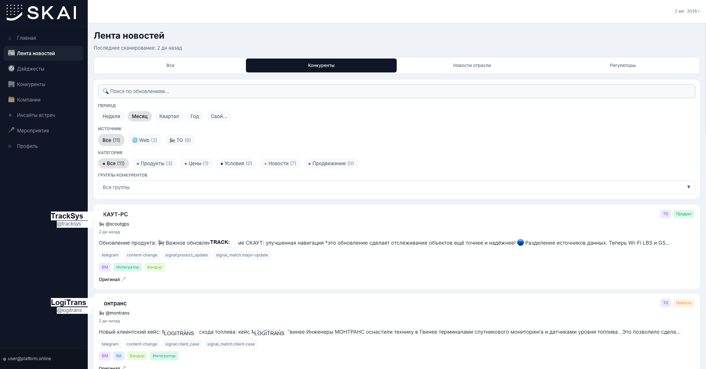
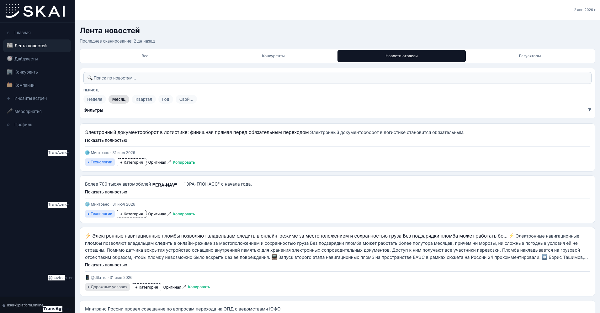

Internal product / AI automation
SKAI: Discovery Hub
One workspace for market and customer research signals
I brought separate tools for market, competitor, and prospective-customer analysis into one internal product and knowledge base with current data.

Context
The first market and competitor scanners ran on personal infrastructure. Separate competitor and prospective-customer analysis tools evolved in parallel, splitting both data and working processes.
What I did
I built Discovery Hub and a unified knowledge base, added AI extraction of jobs, objections, and strengths from customer and lead meeting recordings, containerised the product, moved it to corporate infrastructure, and set up collaborative development in one repository.
Key competitor coverage: 10 -> 250+. Market analyst effort: -60 hours per month.
Product screens
Dashboard, news feed, competitor monitoring


